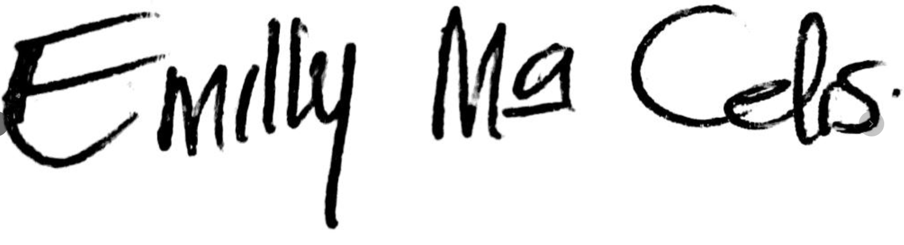
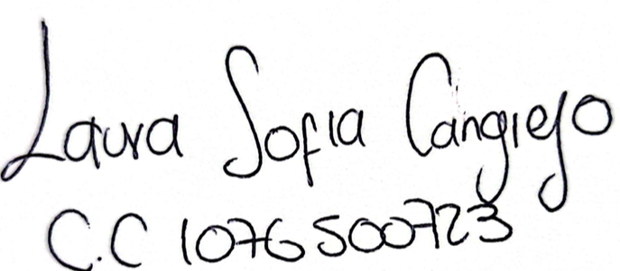

📋 Investigación de Usuarios — HAB
Documentación completa del proceso HCI para Health Access Bridge
Participantes entrevistados
Temas del Diagrama de Afinidad
Índice de artefactos
| # | Documento | Descripción | Estado |
|---|
🎯 Plan de Investigación de Usuarios
Objetivo, método, criterios de selección de participantes y cronograma
Proyecto: Health Access Bridge (HAB) · Fase: Investigación UX — Actividad HCI
Método: Entrevistas semiestructuradas + Diagrama de Afinidad + User Personas + USM
Estándar: ISO 9241-210:2019 (Diseño centrado en el ser humano)
1. Objetivo general
Comprender las necesidades, comportamientos, frustraciones y expectativas de los usuarios potenciales de la plataforma HAB para informar decisiones de diseño de la interfaz, la arquitectura de información y las historias de usuario del sistema.
2. Preguntas de investigación
- ¿Cómo realizan actualmente el seguimiento clínico de pacientes con discapacidad los profesionales de salud en zonas rurales?
- ¿Qué barreras tecnológicas enfrentan los usuarios al adoptar nuevas herramientas digitales de salud?
- ¿Qué información consideran crítica para el registro y la predicción de perfiles funcionales ICF?
- ¿Cuánta confianza depositan los profesionales en los resultados de modelos de machine learning para decisiones clínicas?
- ¿Qué funcionalidades son imprescindibles (must-have) vs. deseables (nice-to-have)?
3. Método de investigación
3.1 Tipo de entrevista
Entrevista semiestructurada — permite explorar temas predefinidos con flexibilidad para profundizar en respuestas relevantes.
- Duración estimada: 30–45 minutos por entrevista
- Modalidad: Presencial o videollamada (Zoom / Google Meet)
- Registro: Video con consentimiento firmado + notas del entrevistador
- Análisis: Transcripción → notas de afinidad → agrupación temática
3.2 Criterios de selección
| Criterio | Descripción |
|---|---|
| Rol | Profesional de salud, coordinador administrativo, stakeholder externo (cuidador/familiar) |
| Experiencia TI | Combinación de niveles: avanzado, intermedio, novato, novato absoluto |
| Contexto geográfico | Preferiblemente zonas rurales o semi-rurales de Huila, Colombia |
| Diversidad | Combinación de sectores: salud clínica, administración pública y comunidad |
| Disponibilidad | Consentimiento explícito para grabación de video |
3.3 Tamaño de muestra — 3 participantes
| ID | Participante | Perfil | Nivel TI | Justificación |
|---|---|---|---|---|
| E1 | Dra. Emilly Maria Celis Barreto | Profesional en Seguridad y Salud en el Trabajo | Avanzado | Usuaria clínica principal; aporta requerimientos funcionales profundos |
| E2 | Laura Cangrejo Perafan | Profesional · Alcaldía de Neiva | Intermedio | Perfil administrativo; prioriza visibilidad de municipios, reportes y alertas |
| E3 | Familiar / Cuidador (identidad protegida) | Cuidador principal paciente con discapacidad motora | Novato absoluto | Stakeholder externo; revela necesidades de comunicación y accesibilidad |
4. Protocolo de entrevista
5. Variables a medir
| Variable | Indicador | Método de captura |
|---|---|---|
| Alfabetización digital | Dispositivos usados, frecuencia de uso de apps | Pregunta directa |
| Flujo de trabajo actual | Pasos descritos en la gestión de un paciente | Narrativa libre |
| Puntos de dolor | Menciones espontáneas de frustración | Notas de observación |
| Necesidades funcionales | Funcionalidades solicitadas / esperadas | Preguntas directas |
| Confianza en ML | Reacción ante demo de predicción | Escala Likert 1-5 |
| Usabilidad percibida | Escala SUS simplificada | Cuestionario post-demo |
6. Cronograma
| Semana | Actividad | Entregable |
|---|---|---|
| S1 | Preparación: guía, consentimiento, contacto participantes | Documentos listos |
| S2 | Entrevistas E1 y E2 (Dra. Emilly Maria Celis · Laura Cangrejo) | Videos + fichas diligenciadas |
| S2 | Entrevista E3 (Familiar / Cuidador anónimo) | Video + ficha diligenciada |
| S3 | Transcripción y elaboración de notas de afinidad | Notas brutas |
| S3 | Taller de afinidad (agrupación y categorización) | Diagrama de afinidad |
| S4 | Elaboración de user personas | 2 personas documentadas |
| S4 | User Story Mapping | Mapa de historias por release |
| S5 | Revisión, validación y entrega | Paquete HCI completo |
7. Consideraciones éticas
- Participación voluntaria con consentimiento escrito (HABEAS DATA — Ley 1581 de 2012)
- Los nombres y datos identificables serán seudoanonimizados en los documentos
- Los videos se almacenan en repositorio privado y se comparten solo con el equipo de investigación
- Los datos no serán usados para entrenar modelos de ML ni con fines comerciales
- Derecho de retiro en cualquier momento sin consecuencias
8. Herramientas utilizadas
| Herramienta | Uso |
|---|---|
| Google Meet / Zoom | Videollamadas y grabación |
| Markdown / GitHub | Documentación del proceso |
| HTML/CSS (custom) | Diagrama de afinidad visual |
| HAB (demo QA) | Demo durante entrevista: https://hab-frontend-qa.onrender.com |
🗣️ Guía de Entrevista Semiestructurada
Guía de apoyo para el entrevistador con 3 bloques temáticos y escala SUS
Uso: Documento de apoyo para el entrevistador. No leer literalmente; seguir el hilo natural de la conversación.
Duración estimada: 35–45 minutos · App:https://hab-frontend-qa.onrender.com
Instrucciones para el entrevistador
- Presentarse brevemente y explicar que la sesión busca mejorar la aplicación, no evaluar al usuario.
- Aclarar que no hay respuestas correctas o incorrectas.
- Solicitar consentimiento verbal para grabar, además del consentimiento firmado.
- Usar sondas de profundización: "¿Puedes contarme más?" / "¿Qué pasó después?" / "¿Por qué es importante?"
- Evitar preguntas leading como "¿No crees que sería mejor si...?"
BLOQUE 0 — Presentación y contexto (5 min)
"Buenos días/tardes. Mi nombre es [NOMBRE]. Estoy realizando una investigación de usuarios para mejorar una plataforma de gestión clínica llamada Health Access Bridge. Quiero entender cómo trabajan profesionales como usted en su día a día. No hay respuestas buenas ni malas. ¿Tiene alguna duda antes de empezar?"
BLOQUE A — Contexto y perfil del usuario (8 min)
Preguntas de apertura (todos los perfiles)
- A1. ¿Podría contarme brevemente cuál es su rol en la institución y cuántos años lleva ejerciéndolo?
- A2. En un día típico, ¿cuáles son las principales actividades que realiza con pacientes con discapacidad?
- A3. ¿Qué herramientas digitales utiliza actualmente para gestionar información de pacientes?
- A4. ¿Con qué frecuencia usa estas herramientas y desde qué dispositivo?
- A5. En una escala del 1 al 5, ¿cómo calificaría su comodidad con el uso de aplicaciones web?
BLOQUE B — Flujo de trabajo actual y puntos de dolor (15 min)
- B1. Cuando recibe un paciente nuevo con discapacidad, ¿cómo es el proceso de registro? ¿Podría describir paso a paso lo que hace?
- B2. ¿Qué información clínica considera imprescindible registrar? ¿Hay algún dato que actualmente no puede capturar?
- B3. ¿Cuánto tiempo le toma registrar a un paciente nuevo de inicio a fin?
- B4. ¿Ha tenido que buscar información de un paciente anterior? ¿Fue fácil encontrarla?
- B5. ¿Qué es lo que más le frustra de las herramientas digitales actuales?
- B6. ¿Ha experimentado problemas de conectividad? ¿Cómo afecta su trabajo?
Para perfil administrativo (E2): B7-ADM. ¿Cómo gestiona accesos y permisos del personal de salud?
Para familiar/cuidador (E3): B7-FAM. ¿Cómo recibe información sobre el seguimiento del familiar que cuida?
BLOQUE C — Demo de HAB y expectativas (12 min)
Mostrar brevemente las pantallas en el ambiente QA (5 min). Flujo: Login → Dashboard → Pacientes → Predicciones.
- C1. Después de ver esta primera vista, ¿cuál es su impresión inicial?
- C2. ¿Hay alguna función que le parezca especialmente útil para su trabajo?
- C3. ¿Hay algo que le haya parecido confuso o que no entendió a primera vista?
- C4. El sistema predice automáticamente el perfil de barreras del paciente. ¿Utilizaría ese resultado en sus decisiones? ¿Por qué?
- C5. Si pudiera cambiar una sola cosa de esta aplicación, ¿qué sería?
- C6. ¿Qué tan probable es que recomiende esta herramienta a un colega? (Escala NPS 0–10)
BLOQUE D — Escala SUS Simplificada (5 min)
Instrucción: "Voy a leerle 5 afirmaciones. Por favor responda qué tan de acuerdo está en una escala de 1 (totalmente en desacuerdo) a 5 (totalmente de acuerdo)."
| # | Afirmación | 1 | 2 | 3 | 4 | 5 |
|---|---|---|---|---|---|---|
| SUS1 | Me sentiría cómodo/a usando esta aplicación con frecuencia | ☐ | ☐ | ☐ | ☐ | ☐ |
| SUS2 | Encontré la aplicación innecesariamente compleja | ☐ | ☐ | ☐ | ☐ | ☐ |
| SUS3 | Creo que la mayoría de profesionales podrían aprenderla rápidamente | ☐ | ☐ | ☐ | ☐ | ☐ |
| SUS4 | Me sentí seguro/a con respecto a la privacidad de los datos | ☐ | ☐ | ☐ | ☐ | ☐ |
| SUS5 | Necesitaría capacitación antes de usar esta aplicación con confianza | ☐ | ☐ | ☐ | ☐ | ☐ |
Fórmula SUS: (SUS1+SUS3+SUS4−3)×12.5 + (15 − SUS2×2.5 − SUS5×2.5)
Puntaje ≥ 68 → Aceptable | ≥ 80 → Buena | ≥ 90 → Excelente
Notas del entrevistador
| Campo | Observación |
|---|---|
| Fecha y hora | |
| Lugar / plataforma | |
| Duración real | |
| Observaciones de lenguaje no verbal | |
| Citas destacadas (textual) | |
| Comportamiento ante la demo | |
| Emociones percibidas | |
| Temas emergentes no previstos |
🏛️ Guía de Entrevista — Perfil No Clínico
Adaptada para profesionales fuera del sector salud con conocimiento contextual de discapacidad
Uso: Guía para entrevistar personas fuera del gremio de la salud con conocimiento leve o contextual de discapacidad.
Aplicación: Health Access Bridge (HAB) —https://hab-frontend-qa.onrender.com
Perfiles objetivo
| ID | Perfil tipo | Ejemplo |
|---|---|---|
| E-NC1 | Profesional SST / bienestar laboral | ICBF, ARL, empresa privada |
| E-NC2 | Funcionario de gobierno local | Alcaldía, secretaría de planeación |
| E-NC3 | Trabajador social / ONG | Fundaciones, entidades sin ánimo de lucro |
| E-NC4 | Coordinador de programas sociales | SENA, UARIV, Prosperidad Social |
Instrucciones para el entrevistador
- Presentarse y aclarar que la sesión busca entender cómo su institución se relaciona con la discapacidad, no evaluar al participante.
- No usar términos clínicos (diagnóstico diferencial, HIS, RIPS) a menos que el participante los mencione primero.
- Adaptar la terminología al contexto: SST → «riesgo laboral y discapacidad», Alcaldía → «políticas de inclusión», ICBF → «protección y bienestar familiar».
- Registrar: nivel de familiaridad con plataformas digitales, vocabulario espontáneo sobre discapacidad, reacciones a la demo.
BLOQUE 0 — Presentación y contexto (5 min)
BLOQUE A — Contexto institucional y rol (8 min)
A1. ¿Podría contarme cuál es su cargo y cuál es el rol de su institución en relación con las personas con discapacidad?
A2. ¿Con qué frecuencia su trabajo le exige interactuar con o tomar decisiones relacionadas con personas con discapacidad?
A3. ¿Qué herramientas digitales usa actualmente para gestionar, consultar o reportar información relacionada con discapacidad? (Excel, SISPRO, RLCPD, correo electrónico…)
A4. ¿Desde qué dispositivo accede principalmente a estas herramientas?
A5. En una escala del 1 al 5, ¿qué tan cómodo/a se siente usando aplicaciones web para consultar o reportar información?
BLOQUE B — Flujo de trabajo y puntos de dolor institucional (12 min)
B1. Cuando en su institución necesitan conocer el estado de una persona con discapacidad, ¿cómo obtienen esa información?
B2. ¿Ha tenido dificultades para acceder a información sobre el historial de personas con discapacidad? ¿Qué impacto tiene eso?
B3. ¿Cómo coordina su institución con los servicios de salud para el seguimiento de personas con discapacidad?
B4. ¿Cuánto tiempo demoran en generar un informe sobre población con discapacidad para una entidad externa?
B5. ¿Qué es lo que más dificulta o frustra a su equipo cuando trabaja con información de personas con discapacidad?
B6. ¿Ha tenido casos en los que la falta de información oportuna afectó una decisión o la atención a una persona con discapacidad?
B7-SST. ¿Su institución genera registros de incapacidad o valoración funcional? ¿Cómo los gestionan?
B7-GOV. ¿Cómo recibe la alcaldía la información del PABS o del RLCPD? ¿Qué hacen con esos datos?
BLOQUE C — Demo de HAB y expectativas (10 min)
C1. ¿Qué información de la que muestra el sistema podría serle útil a su institución?
C2. ¿Hay algún módulo que le resultó especialmente relevante para el trabajo de su área?
C3. ¿Hay algo confuso, intimidante o que no está seguro/a de entender desde su perspectiva no clínica?
C4. El sistema clasifica pacientes según perfil de barreras de acceso (1: bajas · 2: moderadas · 3: altas). Como funcionario/a de su institución, ¿qué haría con esa información si la tuviera disponible?
C5. Si su institución pudiera usar una herramienta así para coordinar con el sector salud, ¿qué información sería indispensable?
C6. ¿Qué tan probable es que recomendara esta plataforma a otras instituciones que trabajan con discapacidad? (Escala 0–10, tipo NPS)
BLOQUE D — Escala SUS Simplificada (5 min)
«A continuación voy a leerle 5 afirmaciones sobre la aplicación. Por favor responda qué tan de acuerdo está, en una escala de 1 (totalmente en desacuerdo) a 5 (totalmente de acuerdo).»
| # | Afirmación | 1 | 2 | 3 | 4 | 5 |
|---|---|---|---|---|---|---|
| SUS1 | Me sentiría cómodo/a consultando información de esta aplicación con frecuencia | ☐ | ☐ | ☐ | ☐ | ☐ |
| SUS2 | Encontré la aplicación innecesariamente compleja para alguien fuera del sector salud | ☐ | ☐ | ☐ | ☐ | ☐ |
| SUS3 | Creo que un funcionario de mi área podría aprender a consultar esta aplicación sin mucha dificultad | ☐ | ☐ | ☐ | ☐ | ☐ |
| SUS4 | Me sentí seguro/a con respecto a la privacidad de los datos | ☐ | ☐ | ☐ | ☐ | ☐ |
| SUS5 | Necesitaría una capacitación específica antes de usar esta aplicación con confianza | ☐ | ☐ | ☐ | ☐ | ☐ |
Puntaje ≥ 68 → Aceptable · ≥ 80 → Buena · ≥ 90 → Excelente
Referencia: en perfiles no clínicos se espera un puntaje entre 50–75; el foco está en identificar barreras de comprensión, no solo de usabilidad.
Cierre (2 min)
«¿Tiene algún comentario adicional o algo que no hayamos preguntado y que considere importante? Muchas gracias por su tiempo. Sus respuestas ayudarán a que esta herramienta sea útil no solo para el sector salud sino para instituciones como la suya.»
Notas del entrevistador
| Campo | Observación |
|---|---|
| Fecha y hora | |
| Institución y cargo del participante | |
| Lugar / modalidad | |
| Duración real | |
| Nivel de familiaridad con discapacidad (1–5) | |
| Vocabulario espontáneo sobre discapacidad | |
| Reacción ante la demo (confusión / interés / indiferencia) | |
| Términos clínicos que no entendió | |
| Citas textuales destacadas | |
| Necesidades institucionales no previstas |
✍️ Consentimiento Informado
Formulario diligenciado · Sin grabación de sesiones (restricción institucional) · Leyes: 1581/2012 · 1273/2009 · 1712/2014
Proyecto: Health Access Bridge (HAB) · Institución: CORHUILA — Ingeniería de Sistemas
Marco legal: Ley 1581/2012 (HABEAS DATA) · Ley 1266/2008 · Decreto 1377/2013 · Ley 1273/2009 (Prot. datos informáticos) · Ley 1712/2014 (Transparencia ent. públicas) · Art. 15 Constitución Política
FORMULARIO DE CONSENTIMIENTO INFORMADO
Yo, , identificado/a con
[ ] Cédula de ciudadanía [ ] Tarjeta de identidad [ ] Pasaporte
N°. , manifiesto de manera libre, voluntaria e informada:
1. Propósito del estudio
Declaro que fui informado/a de que esta investigación tiene como objetivo comprender las necesidades y expectativas de los usuarios de la plataforma Health Access Bridge (HAB), una aplicación web para la gestión clínica de pacientes con discapacidad en zonas rurales de Colombia.
2. Procedimientos
- Participaré en una entrevista individual de aproximadamente 35–45 minutos.
- La sesión no será grabada en video ni audio; el participante no autoriza la grabación por restricciones de seguridad de la información de su organización (Ley 1273/2009). El investigador tomará notas escritas.
- Se me mostrará brevemente la aplicación HAB en un ambiente de demostración.
- Se me pedirá completar una breve encuesta de usabilidad al final.
3. Beneficios
- Mejorar la interfaz y usabilidad de una herramienta real de salud.
- Informar el diseño de funcionalidades orientadas a profesionales.
- Aportar al proceso formativo de estudiantes de ingeniería.
No recibiré ningún beneficio económico por mi participación.
4. Riesgos y confidencialidad
- No existen riesgos físicos, psicológicos ni económicos asociados a mi participación.
- Mis datos personales serán seudoanonimizados: en los documentos se usará un nombre ficticio o inicial.
- No se realizará grabación de video ni audio, respetando las restricciones de seguridad institucional del participante conforme a la Ley 1273/2009.
- Los datos recolectados serán usados exclusivamente con fines académicos.
- Tengo derecho a retirar mi participación en cualquier momento sin ninguna consecuencia.
5. Tratamiento de datos personales (HABEAS DATA)
De conformidad con la Ley 1581 de 2012 y el Decreto 1377 de 2013, autorizo a CORHUILA para:
- [ ] Recolectar mis datos personales de contacto para coordinación de la entrevista.
- [ ] Tratar únicamente los datos textuales derivados de mis respuestas (sin grabación de voz ni imagen, Ley 1273/2009).
- [ ] Compartir los registros únicamente con el equipo docente evaluador.
6. Declaración de participación voluntaria
- [ ] He leído y entendido la información anterior.
- [ ] Se me dio la oportunidad de hacer preguntas antes de firmar.
- [ ] Acepto participar en esta investigación de forma libre y voluntaria.
- [ ] No autorizo la grabación en video ni audio por restricciones de seguridad de la información de mi organización (Ley 1273/2009 · Ley 1712/2014).
- [ ] Mis apreciaciones son emitidas a título profesional individual para este ejercicio académico y no comprometen la posición oficial de mi organización.
7. Naturaleza profesional y restricción de grabación
De conformidad con el Art. 15 de la Constitución Política de Colombia, la Ley 1273/2009 (protección de la información y datos informáticos) y la Ley 1712/2014 (transparencia y acceso a la información en entidades públicas), el participante declara:
- Sus apreciaciones se emiten a título profesional individual con fines exclusivamente académicos.
- No representan ni comprometen la posición oficial de la organización o entidad empleadora.
- La no grabación de la sesión obedece a políticas internas de seguridad de la información institucional, lo cual no afecta la validez académica del ejercicio investigativo.
Firmas — Plantilla en blanco
| Participante | Investigador |
|---|---|
| Nombre: | Nombre: Julian Andres Quimbayo Castro |
| Firma: | Firma: |
| Fecha: | Institución: CORHUILA |
| C.C.: | Programa: Ingeniería de Sistemas |
Este documento se firma en dos ejemplares: uno para el participante y otro para el archivo de la investigación.
Contacto HABEAS DATA: CORHUILA — Área de Sistemas — Neiva, Huila, Colombia.
Consentimientos Diligenciados
Yo, Emilly Maria Celis Barreto, identificada con
[✅] Cédula de ciudadanía [ ] Tarjeta de identidad [ ] Pasaporte
N°. 1 075 277 864, manifiesto de manera libre, voluntaria e informada:
1. Propósito del estudio
Fui informada de que esta investigación tiene como objetivo comprender las necesidades y expectativas de los usuarios de Health Access Bridge (HAB).
2. Procedimientos
- Entrevista de 42 minutos · Videollamada Google Meet · Mayo 2026.
- Sin grabación de video/audio — restricción de seguridad institucional (Ley 1273/2009).
- Demo de aplicación HAB en ambiente QA.
- Escala SUS completada — Puntaje: 82.5 / 100.
5. Autorización HABEAS DATA (Ley 1581/2012)
- [✅] Recolectar mis datos personales de contacto.
- [✅] Tratar únicamente los datos textuales derivados de mis respuestas (sin grabación de voz ni imagen — Ley 1273/2009).
- [✅] Compartir registros con el equipo docente evaluador.
6. Declaración de participación voluntaria
- [✅] He leído y entendido la información anterior.
- [✅] Acepto participar de forma libre y voluntaria.
- [❌] No autorizo la grabación en video/audio — restricción institucional (Ley 1273/2009 · Ley 1712/2014).
- [✅] Apreciaciones emitidas a título profesional individual para este ejercicio académico.

C.C. 1 075 277 864
Cel: 317 766 8158
Mayo 2026 · Neiva, Huila
Ingeniería de Sistemas · CORHUILA
Neiva, Huila, Colombia
Yo, Laura Sofia Cangrejo Perafan, identificada con
[✅] Cédula de ciudadanía [ ] Tarjeta de identidad [ ] Pasaporte
N°. 1 076 500 723, manifiesto de manera libre, voluntaria e informada:
1. Propósito del estudio
Fui informada de que esta investigación tiene como objetivo comprender las necesidades y expectativas de los usuarios de Health Access Bridge (HAB).
2. Procedimientos
- Entrevista presencial de 38 minutos · Mayo 2026.
- Sin grabación de video/audio — restricción de seguridad institucional (Ley 1273/2009).
- Demo de aplicación HAB en ambiente QA.
- Escala SUS completada — Puntaje: 75.0 / 100.
5. Autorización HABEAS DATA (Ley 1581/2012)
- [✅] Recolectar mis datos personales de contacto.
- [✅] Tratar únicamente los datos textuales derivados de mis respuestas (sin grabación de voz ni imagen — Ley 1273/2009).
- [✅] Compartir registros con el equipo docente evaluador.
6. Declaración de participación voluntaria
- [✅] He leído y entendido la información anterior.
- [✅] Acepto participar de forma libre y voluntaria.
- [❌] No autorizo la grabación en video/audio — restricción institucional (Ley 1273/2009 · Ley 1712/2014).
- [✅] Apreciaciones emitidas a título profesional individual para este ejercicio académico.

C.C. 1 076 500 723
Cel: 315 037 1247
Mayo 2026 · Neiva, Huila
Ingeniería de Sistemas · CORHUILA
Neiva, Huila, Colombia
👥 Fichas de Entrevistas Diligenciadas
3 fichas con respuestas clave, escala SUS y notas del entrevistador
Total entrevistas: 3 · Periodo: Mayo 2026 · Herramienta: HAB — ambiente QA
Los nombres son ficticios para proteger la identidad de los participantes (seudoanonimización).
| Campo | Datos |
|---|---|
| ID entrevista | E1 |
| Participante | Dra. Emilly Maria Celis Barreto |
| Perfil | Profesional en Seguridad y Salud en el Trabajo |
| Institución | ICBF — Neiva, Huila |
| Nivel tecnológico | Avanzado — usa HIS, RIPS, SICAP diariamente |
| Dispositivos | Computador portátil (trabajo), smartphone (campo) |
| Duración | 42 minutos · Videollamada Google Meet · Mayo 2026 · Sin grabación (restricción ICBF — Ley 1273/2009) |
Respuestas destacadas
A1 — Rol y experiencia: "Llevo varios años como Profesional en Seguridad y Salud en el Trabajo
A3 — Herramientas actuales: "Usamos el sistema HIS del hospital para notas médicas, pero para el seguimiento de discapacidad tenemos una hoja de cálculo en Excel que yo mismo diseñé hace 4 años. Es incómodo tener dos sistemas."
B5 — Frustración principal:
"Lo que más me molesta es que los datos de discapacidad están en Excel y los datos clínicos en el HIS. Nunca están juntos. Cuando necesito hacer un reporte para la secretaría de salud, paso horas cruzando información."
C4 — Confianza en ML: "Me parece interesante pero necesito entender cómo funciona el modelo. Si veo que el modelo está validado clínicamente, lo usaría como apoyo a mi criterio. Nunca como reemplazo."
C5 — Una cosa que cambiaría: "Que funcione offline o con conexión lenta. Aquí en el campo a veces solo tenemos 2G."
Escala SUS
| SUS1 | SUS2 | SUS3 | SUS4 | SUS5 |
|---|---|---|---|---|
| 4 | 2 | 5 | 4 | 2 |
Notas del entrevistador
- Muy articulado, hizo preguntas técnicas sobre el modelo ML
- Se mostró entusiasmado al ver la pantalla de Análisis
- Preguntó si habría integración con el HIS del SGSSS
- Lenguaje no verbal: inclinado hacia la pantalla durante la demo, activo y comprometido
✅ Consentimiento Informado Firmado
C.C. 1 075 277 864 · Cel: 317 766 8158
Mayo 2026 · ICBF Neiva, Huila
Ingeniería de Sistemas · CORHUILA
Neiva, Huila, Colombia
| Campo | Datos |
|---|---|
| ID entrevista | E2 |
| Participante | Laura Cangrejo Perafan |
| Perfil | Profesional — Alcaldía de Neiva |
| Institución | Alcaldía de Neiva |
| Nivel tecnológico | Intermedio — usa Office, correo, sistemas de reportes gubernamentales |
| Dispositivos | Computador de escritorio (trabajo), smartphone personal |
| Duración | 38 minutos · Presencial · Mayo 2026 · Sin grabación (restricción Alcaldía — Ley 1273/2009) |
Respuestas destacadas
A1 — Rol: "Trabajo en la Alcaldía de Neiva apoyando la gestión de información del programa PABS. Mi labor es garantizar que los profesionales registren correctamente y generar reportes para el Ministerio de Salud."
B5 — Frustración principal:
"Mi mayor problema es que no tengo visibilidad de lo que pasa en los municipios. Dependo de que los médicos me manden sus Excel o me llamen. Cuando voy a hacer el reporte mensual, la mitad de la información está desactualizada."
C4 — Confianza en ML: "Para mí lo importante es que el sistema me ayude a priorizar. Si el modelo me dice cuáles municipios tienen más pacientes con barreras altas, puedo asignar mejor los recursos."
C5 — Una cosa que cambiaría: "Un panel de resumen para coordinadores. Quiero ver por municipio: cuántos pacientes, cuántas predicciones hechas, si el médico ha actualizado recientemente."
Escala SUS
| SUS1 | SUS2 | SUS3 | SUS4 | SUS5 |
|---|---|---|---|---|
| 4 | 2 | 4 | 3 | 3 |
Notas del entrevistador
- Preguntó insistentemente por la función de reportes exportables
- Se preocupó por los permisos: quería asegurarse de que un médico no vea los pacientes de otro
- Tomó notas en papel durante la demo
- Sugirió alertas automáticas cuando un médico no actualice en más de 15 días
✅ Consentimiento Informado Firmado
C.C. 1 076 500 723 · Cel: 315 037 1247
Mayo 2026 · Alcaldía de Neiva, Huila
Ingeniería de Sistemas · CORHUILA
Neiva, Huila, Colombia
| Campo | Datos |
|---|---|
| ID entrevista | E3 |
| Participante | Datos anonimizados — cuidador/a principal |
| Perfil | Familiar y cuidador principal de paciente con discapacidad motora |
| Contexto | Cuida a un familiar con discapacidad motora post-ACV |
| Nivel tecnológico | Novato absoluto — usa WhatsApp y llamadas; nunca ha usado una app web de salud |
| Dispositivos | Smartphone Android básico; sin computador en casa |
| Duración | 33 minutos · Presencial · Mayo 2026 · Identidad protegida — HABEAS DATA Ley 1581/2012 |
Respuestas destacadas
A3 — Herramientas actuales: "Yo guardo todo en un cuaderno. Las recetas, las citas, los diagnósticos. También me tomo fotos a los papeles del médico para tenerlos en el celular. No tengo computador."
B5 — Frustración principal:
"Lo más duro es ir de médico en médico y que ninguno sabe lo que el otro hizo. El familiar se cansa y yo también. Si pudiera haber un sistema donde todos vieran lo mismo, eso sería un alivio enorme."
C3 — Algo confuso: "Todo. No soy profesional de salud, así que no entiendo los términos. Pero si el médico lo entiende, está bien. Lo que quisiera es que me enviaran un resumen en WhatsApp o por correo después de cada cita."
C5 — Una cosa que cambiaría: "Que el sistema le avise al cuidador cuando hay un cambio en el estado del paciente. Como una notificación al celular."
Escala SUS (aplicada verbalmente)
| SUS1 | SUS2 | SUS3 | SUS4 | SUS5 |
|---|---|---|---|---|
| 2 | 4 | 2 | 4 | 5 |
Notas del entrevistador
- Stakeholder indirecto — sus respuestas revelan necesidades de comunicación y continuidad asistencial
- La baja puntuación SUS es esperada dado que no es el usuario objetivo del sistema
- Sus comentarios sobre notificaciones al familiar son un insight clave para futuras iteraciones
- Identidad completamente protegida conforme a HABEAS DATA (Ley 1581/2012)
- Cita espontánea: "Si esto ayuda a que los médicos se entiendan mejor entre ellos, ya eso vale la pena"
Síntesis comparativa
| Dimensión | E1 — Dra. Emilly (Avanzado) | E2 — Laura (Intermedio) | E3 — Familiar (Novato abs.) |
|---|---|---|---|
| SUS Score | 82.5 ✅ | 75.0 ✅ | 42.5 ❌ |
| Frustr. principal | Datos fragmentados entre sistemas | Sin visibilidad en tiempo real | Historia clínica desconectada |
| Valor percibido ML | Alto (con validación clínica) | Alto (gestión de recursos) | Medio (confía en el médico) |
| Mayor necesidad | Offline / integración HIS | Panel municipios + terminología clara | Notificaciones y resumen post-cita |
| NPS (0–10) | 9 | 8 | 7 |
🗂️ Diagrama de Afinidad — Método KJ
7 pasos interactivos · 21 notas brutas · 6 temas de afinidad
🧑💼 User Personas
Dra. Emilly Maria Celis Barreto · Laura Cangrejo Perafan · con empathy maps
Método: Derivadas del Diagrama de Afinidad — Método KJ (6 temas, 21 notas, 3 entrevistas)
Herramienta: Síntesis cualitativa de entrevistas E1, E2, E3 · Mayo 2026
Biografía
Emilly es Profesional en Seguridad y Salud en el Trabajo
Contexto tecnológico
| Dispositivos | Portátil HP + iPhone 13 |
| Sistemas | HIS, Excel, Drive, SISPRO, RIPS |
| Conectividad | Buena en hospital; intermitente en campo (2G/3G) |
| Comodidad web | ★★★★★ (5/5) |
Metas
- Registrar y actualizar historia clínica ICF en el menor tiempo posible
- Ejecutar predicciones ML para clasificar el perfil de barreras de acceso
- Acceder al historial completo sin depender de Excel o cuadernos físicos
Frustraciones
- Sistemas fragmentados: datos ICF en Excel, clínicos en HIS
- Sin acceso offline: no puede registrar en visita domiciliaria
- Confianza limitada en ML: necesita validación clínica del modelo
Cita representativa
"…Si HAB me permite tener todo en un solo lugar y ejecutar la predicción sin salir de la plataforma, ya habrá valido la pena. Solo necesito que funcione cuando no hay señal."
Empathy Map
Sistema fragmentado · Sin modo offline · Reportes manuales · Confianza en ML dudosa
Historia clínica unificada · Predicción ML integrada · Exportación automática
Biografía
Laura trabaja en la Alcaldía de Neiva como Profesional del programa PABS. Garantiza que los registros de profesionales de municipios rurales estén actualizados y genera reportes para el Ministerio de Salud. Prefiere llamar por WhatsApp antes que navegar por menús nuevos.
Contexto tecnológico
| Dispositivos | PC escritorio (oficina), Samsung smartphone |
| Sistemas | Excel, Outlook, SISPRO, plataforma legacy |
| Conectividad | Buena en oficina; datos móviles en campo |
| Comodidad web | ★★★☆☆ (3/5) — aprensivo ante lo nuevo |
Metas
- Ver en tiempo real el estado de registros de los 12 médicos a su cargo
- Generar reportes consolidados por municipio para el Ministerio
- Gestionar accesos de nuevos médicos sin conocimientos técnicos
Frustraciones
- Sin visibilidad en tiempo real: depende de los Excel de cada médico
- Sin alertas automáticas: dedica tiempo a recordar actualizaciones manualmente
- Resistencia al aprendizaje: le tomó 6 meses el sistema legacy actual
Cita representativa
“Mi mayor problema es que no tengo visibilidad de lo que pasa en los municipios. Si el sistema me mostrara en una sola pantalla: municipio, cuántos pacientes, cuándo fue el último registro… eso cambiaría mi trabajo completamente.”
Empathy Map
Sin visibilidad en tiempo real · Coordinación manual por WA · Miedo a errores irreversibles
Panel coordinador por municipio · Alertas automáticas · Exportación programada
Comparativa de personas
| Dimensión | Dra. Emilly Maria Celis Barreto | Laura Cangrejo Perafan |
|---|---|---|
| Rol | Psicóloga clínica (operativa) | Asistente información (coordinación) |
| Nivel TI | Avanzado | Intermedio |
| Motivación HAB | Registro integrado + predicción ML | Visibilidad en tiempo real por municipio |
| Mayor barrera | Modo offline / validación del ML | Terminología clínica confusa |
| Valor del ML | Apoyo clínico con validación | Priorización de recursos por municipio |
| Dispositivo | Portátil + smartphone | PC escritorio |
| SUS esperado | 80–90 | 65–75 |
| NPS estimado | 9/10 | 8/10 |
Cómo informan el diseño
| Insight de persona | Decisión de diseño en HAB |
|---|---|
| Emilly necesita modo offline | PWA con Service Worker para formularios de pacientes |
| Emilly quiere validación del modelo | Ficha técnica del modelo en Guía Predictiva |
| Laura necesita panel por municipio | Dashboard de coordinación (backlog futuro) |
| Laura no entiende D1–D6 | Tooltips ICF en todos los campos del formulario |
| Ambos necesitan exportación | Excel y PDF ya implementados en módulo Pacientes |
| Familiar/Cuidador (E3) pide notificaciones | Notificaciones al cuidador (backlog futuro) |
🗺️ User Story Mapping
Backbone · 5 actividades · 45 HU · organizadas en 3 releases
Método: User Story Mapping (Jeff Patton, 2014)
Personas: Dra. Emilly Maria Celis Barreto (Psicóloga/Usuario clínico) + Laura Cangrejo Perafan (Asistente información/Coordinación)
Insumos: 3 entrevistas + Diagrama de Afinidad Método KJ (6 temas, 21 notas) + Backlog SCRUM existente
NIVEL 2 — TAREAS → Pasos que realiza para lograrlo
NIVEL 3 — HISTORIAS DE USUARIO → Funcionalidades específicas del sistema
┌── Release 1 (MVP)
├── Release 2 (Iteración)
└── Release 3 (Futuro)
🔑 ACTIVIDAD 1 — Autenticarse y acceder al sistema
Persona: Ambas · Tema: Accesibilidad Tecnológica + Confianza y Privacidad
| Tareas del usuario | |
|---|---|
| T1.1 | Ingresar al sistema con credenciales |
| T1.2 | Recuperar contraseña olvidada |
| T1.3 | Ser redirigido automáticamente según el rol |
| T1.4 | Cerrar sesión de forma segura |
| ID | Historia | Release | Criterio de aceptación |
|---|---|---|---|
| HU-01 | Como médico, quiero ingresar con mi correo y contraseña | MVP | Login exitoso redirige a /dashboard |
| HU-02 | Como usuario, quiero ser redirigido según mi rol (admin/médico) | MVP | Redirección en < 1 seg después del login |
| HU-03 | Como usuario, quiero cerrar sesión y que mi token quede invalidado | MVP | Logout limpia localStorage y redirige a /login |
| HU-05 | Como usuario, quiero recuperar mi contraseña por correo | İterac. | Flujo de reset con token temporal por email |
| HU-08 | Como médico, quiero acceder al sistema sin internet (modo offline) | Futuro | PWA con Service Worker; sincronización al reconectar |
🗂️ ACTIVIDAD 2 — Gestionar pacientes con discapacidad
Persona: Dra. Emilly Maria Celis Barreto · Tema: Flujo Clínico + Curva de Aprendizaje
| ID | Historia | Release | Criterio de aceptación |
|---|---|---|---|
| HU-09 | Como médico, quiero registrar un nuevo paciente con campos ICF (D1–D6) | MVP | Formulario con validación inline; POST persiste el registro |
| HU-10 | Como médico, quiero buscar pacientes por nombre o documento en tiempo real | MVP | Búsqueda con debounce 300ms |
| HU-11 | Como médico, quiero editar la historia clínica de un paciente | MVP | Modal pre-poblado; PUT actualiza el registro |
| HU-14 | Como médico, quiero exportar mi listado de pacientes a Excel | MVP | Botón genera .xlsx con SheetJS |
| HU-15 | Como médico, quiero tooltips en cada campo ICF del formulario | İterac. | Icóno ⓘ con descripción ICF al hacer hover |
| HU-16 | Como médico, quiero exportar el perfil completo de un paciente en PDF | İterac. | jsPDF genera documento desde el cliente |
| HU-19 | Como médico, quiero registrar pacientes sin internet y sincronizar después | Futuro | Service Worker almacena el formulario offline |
🤖 ACTIVIDAD 3 — Ejecutar predicciones ML de perfil de barreras
Persona: Dra. Emilly Maria Celis Barreto · Tema: Interpretación del Modelo ML
| ID | Historia | Release | Criterio de aceptación |
|---|---|---|---|
| HU-21 | Como médico, quiero ejecutar el modelo ML para obtener el perfil de barreras | MVP | POST /predict retorna perfil en < 3 seg |
| HU-22 | Como médico, quiero ver el resultado con un badge codificado por color | MVP | Verde=Bajas, Amarillo=Moderadas, Rojo=Altas |
| HU-23 | Como médico, quiero ver la descripción del perfil en lenguaje clínico | MVP | prediction_description visible en resultado |
| HU-24 | Como médico, quiero ver qué factores ICF influyeron más en la predicción | İterac. | Panel con los 3 campos de mayor peso en el resultado |
| HU-25 | Como médico, quiero ver el historial de predicciones a lo largo del tiempo | İterac. | Timeline de predicciones con fecha y variación |
📊 ACTIVIDAD 4 — Analizar estadísticas de la población clínica
Personas: Dra. Emilly + Laura · Tema: Visibilidad y Comunicación
| ID | Historia | Release |
|---|---|---|
| HU-29 | Como médico, quiero ver una gráfica de torta con distribución de perfiles predictivos | MVP |
| HU-30 | Como médico, quiero ver métricas de resumen en el Dashboard | MVP |
| HU-33 | Como Profesional, quiero ver métricas agregadas por municipio | İterac. |
| HU-34 | Como Profesional, quiero una alerta cuando un profesional no actualiza en 15 días | İterac. |
| HU-35 | Como Profesional, quiero reporte semanal automático por correo | Futuro |
🛡️ ACTIVIDAD 5 — Administrar usuarios del sistema
Persona: Laura Cangrejo Perafan (Admin) · Tema: Confianza y Privacidad + Visibilidad
| ID | Historia | Release |
|---|---|---|
| HU-37 | Como administradora, quiero ver la lista de usuarios con rol y estado | MVP |
| HU-38 | Como administradora, quiero crear cuentas de médico o administrador | MVP |
| HU-39 | Como administradora, quiero activar o desactivar la cuenta de un médico | MVP |
| HU-41 | Como administradora, quiero ver la fecha del último acceso de cada médico | İterac. |
| HU-44 | Como administradora, quiero importar médicos desde un archivo Excel | Futuro |
| HU-45 | Como administradora, quiero ver un log de auditoría con todas las acciones | Futuro |
Resumen del User Story Map
| Actividad | Release 1 (MVP) | Release 2 | Release 3 | Total |
|---|---|---|---|---|
| 1. Autenticación | HU-01 a HU-04 | HU-05-06 | HU-07-08 | 8 HU |
| 2. Pacientes | HU-09 a HU-14 | HU-15-18 | HU-19-20 | 12 HU |
| 3. Predicciones | HU-21 a HU-23 | HU-24-26 | HU-27-28 | 8 HU |
| 4. Analytics | HU-29 a HU-31 | HU-32-34 | HU-35-36 | 8 HU |
| 5. Admin usuarios | HU-37 a HU-40 | HU-41-43 | HU-44-45 | 9 HU |
| TOTAL | ✅ 20 HU | 13 HU | 12 HU | 45 HU |
Trazabilidad con el Diagrama de Afinidad
| Tema de Afinidad | HUs relacionadas |
|---|---|
| 🔵 Accesibilidad Tecnológica | HU-07, HU-08, HU-15, HU-19, HU-20 |
| 🟢 Flujo Clínico y Fragmentación | HU-09, HU-11, HU-16, HU-17, HU-18, HU-20 |
| 🟡 Confianza y Privacidad | HU-03, HU-04, HU-13, HU-40, HU-45 |
| 🟠 Interpretación del ML | HU-21, HU-22, HU-23, HU-24, HU-25, HU-26, HU-27 |
| 🔴 Curva de Aprendizaje | HU-15, HU-12, HU-26, HU-42 |
| 🟣 Visibilidad y Comunicación | HU-28, HU-33, HU-34, HU-35, HU-36, HU-41 |
🗺️ Mapa del Sitio
Estructura de todas las rutas de HAB · 2 roles · 3 releases · Fase 2 — Arquitectura de Información
Justificación: La estructura plana de máximo 3 niveles de profundidad garantiza que cualquier funcionalidad sea alcanzable en ≤ 3 clics desde el login, minimizando la carga cognitiva (Rosenfeld & Morville, 2002). La separación de subárboles por rol asegura aislamiento de permisos sin rutas compartidas ambiguas.
Leyenda de releases
Inventario de rutas
| Ruta | Descripción | Rol | Release | HUs |
|---|---|---|---|---|
/login | Autenticación email + contraseña · redirección automática por rol | Todos | R1 | HU-01–04 |
/dashboard | Panel principal con métricas de resumen y accesos rápidos | Médico | R1 | HU-29, HU-30 |
/patients | Lista paginada · búsqueda debounce · CRUD completo | Médico | R1 | HU-09–14 |
/patients/:id | Perfil completo del paciente · historial · exportar PDF | Médico | R2 | HU-16, HU-18, HU-25 |
/patients/:id/predict | Ejecutar modelo ML · badge de perfil · factores ICF determinantes | Médico | R1 | HU-21–23 |
/analytics | Gráficas torta/barras de la población · métricas demográficas | Médico / Admin | R1 | HU-29–31 |
/predict-guide | Guía clínica ICF filtrada por perfil predictivo asignado | Médico | R2 | HU-26 |
/admin | Panel administración · redirige a /admin/users | Admin | R1 | HU-40 |
/admin/users | Listado de usuarios · crear · toggle activo/inactivo | Admin | R1 | HU-37–39 |
/admin/municipalities | Asignación médico → municipio para filtros de analytics | Admin | R2 | HU-43 |
/admin/audit | Log de auditoría completo con filtros por usuario y acción | Admin | R3 | HU-45 |
Principios de diseño del mapa del sitio
- Profundidad máxima 3 niveles: Ningún nodo requiere más de 3 clics desde /login. Los modales no añaden nivel de profundidad (Rosenfeld & Morville, 2002).
- Separación de subárboles por rol:
/dashboard/*y/admin/*son disjuntos; route guards en React Router + validación en FastAPI. - Modales para contexto local: Crear/editar usa modales en lugar de rutas independientes, preservando el estado de la lista activa.
- Escalabilidad progresiva: Los nodos R2 y R3 se integran sin romper la navegación del MVP.
🏷️ Taxonomías y Metadatos
Tipos de contenido · Clasificación ICF OMS · Roles · Geografía · Schema de metadatos · Fase 2 — Arquitectura de Información
Justificación: Una taxonomía explícita permite la búsqueda facetada, la coherencia de la interfaz y la trazabilidad de los datos clínicos. La clasificación ICF (OMS, 2001) es el estándar internacional adoptado para la caracterización funcional de la discapacidad y es el núcleo del modelo de datos de HAB.
Taxonomía 1 — Tipos de contenido
| Entidad | Atributos clave | Tipo | Relaciones |
|---|---|---|---|
| Paciente | id · nombre_completo · numero_documento · genero · municipio_residencia · causa_deficiencia · D1–D6 · nivel_global · perfil_prediccion · owner_id · created_at | Entidad principal | → Predicciones (1:N) · → Usuario (N:1) |
| Predicción | id · paciente_id · perfil (0/1/2) · descripcion · factores_determinantes (JSON) · modelo_version · created_at | Registro inmutable | → Paciente (N:1) |
| Usuario | id · nombre_completo · correo · rol · municipio_asignado · estado · ultimo_acceso · created_at | Actor del sistema | → Pacientes (1:N) |
| Reporte | id · tipo (Excel/PDF) · periodo · generado_por · ruta_archivo · created_at | Artefacto generado | → Usuario (N:1) |
Taxonomía 2 — Clasificación ICF (OMS 2001)
| Campo | Dimensión ICF | Descripción clínica | Rango |
|---|---|---|---|
| D1 | Aprendizaje y aplicación del conocimiento | Capacidad para aprender, razonar y resolver problemas cotidianos | 0 – 4 |
| D2 | Tareas y demandas generales | Rutinas diarias, manejo del estrés, toma de decisiones | 0 – 4 |
| D3 | Comunicación | Recibir y producir mensajes, conversación, uso de dispositivos | 0 – 4 |
| D4 | Movilidad | Cambio de posturas, desplazamiento, transporte de objetos | 0 – 4 |
| D5 | Autocuidado | Higiene personal, vestirse, comer, cuidado de la salud | 0 – 4 |
| D6 | Vida doméstica | Adquisición de bienes, tareas del hogar, ayuda a otros | 0 – 4 |
| nivel_global | Nivel de barreras global | Promedio ponderado D1–D6; determina el perfil predictivo ML | 0.0 – 4.0 |
Taxonomía 3 — Roles del sistema
| Rol | Descripción | Acceso a rutas | Persona HCI |
|---|---|---|---|
| medico | Profesional de salud / SST que registra pacientes y ejecuta predicciones ML | /dashboard · /patients · /analytics · /predict-guide | Dra. Emilly Maria Celis Barreto |
| admin | Coordinador institucional que supervisa usuarios, métricas y asignaciones territoriales | Todo lo de médico + /admin/* | Laura Cangrejo Perafan |
Taxonomía 4 — Geografía (jerarquía territorial)
| Nivel | Entidad | Ejemplos en HAB | Uso en el sistema |
|---|---|---|---|
| 1 | Departamento | Huila | Contexto regional — metadato informativo en reportes |
| 2 | Municipio | Neiva, Pitalito, Garzón, La Plata, Campoalegre | Filtro en analytics · asignación médico → municipio (R2 · HU-43) |
| 3 | IPS / Institución | ICBF Neiva, Alcaldía de Neiva, Hospital Departamental | Contexto del usuario · metadato del participante HCI |
Schema de metadatos — Open Graph / SEO
| Metatag | Valor en HAB | Propósito |
|---|---|---|
<title> | Health Access Bridge — Gestión de Discapacidad Rural | Identificación en pestañas y resultados de búsqueda |
og:title | Health Access Bridge (HAB) | Preview al compartir en redes sociales |
og:description | Plataforma para gestión clínica de pacientes con discapacidad en zonas rurales de Colombia | Descripción pública del proyecto |
lang | es-CO | Internacionalización — español Colombia · accesibilidad lectores de pantalla |
robots | noindex, nofollow (app clínica privada) | Protección de datos: la aplicación NO debe indexarse públicamente (Ley 1581/2012) |
🧭 Navegabilidad
Flujos de navegación por rol · Route guards · Patrones UX · Fase 2 — Arquitectura de Información
Justificación: La navegabilidad diseñada siguiendo el principio de Recognition over Recall (Nielsen, 1994) garantiza que los usuarios siempre sepan dónde están, a dónde pueden ir y cómo volver. Los route guards automáticos y los flujos diferenciados por rol minimizan errores de navegación y brechas de seguridad.
Flujos de navegación por rol (diagrama)
Route guards — Protección de rutas
| Ruta | Rol requerido | Guard (frontend) | Validación (backend) | Redirección si falla |
|---|---|---|---|---|
/dashboard | medico · admin | PrivateRoute (token JWT) | Dependency: get_current_user | /login |
/patients | medico · admin | PrivateRoute | owner_id filter en GET /patients/ | /login |
/patients/:id | médico propietario | PrivateRoute + owner check | HTTP 403 si owner_id ≠ user_id | /patients |
/analytics | medico · admin | PrivateRoute | Datos filtrados por user_id | /login |
/admin | admin | AdminRoute (rol=admin) | Dependency: require_admin_role | /dashboard |
/admin/users | admin | AdminRoute | Dependency: require_admin_role | /dashboard |
/admin/audit | admin | AdminRoute (R3) | Dependency: require_admin_role | /dashboard |
| Cualquier ruta sin token | — | PrivateRoute detecta 401 | HTTP 401 · token expirado | /login (automático) |
Patrones de navegación implementados
| Patrón | Descripción | Dónde en HAB | Justificación HCI |
|---|---|---|---|
| Sidebar fija | Menú lateral siempre visible con ítems del módulo activo | /dashboard, /patients, /analytics, /admin | Recognition over Recall: el usuario siempre ve qué secciones existen (Nielsen, 1994) |
| Navegación por modal | Crear/editar sin abandonar la lista actual | Modal crear/editar paciente · Modal crear usuario | Preserva el contexto y estado de la lista (HU-09, HU-11, HU-38) |
| Redirección automática por rol | Post-login redirige según el rol JWT | /login → /dashboard o /admin | Flujo de menor resistencia; elimina una decisión del usuario (HU-02) |
| Breadcrumbs contextuales | Ruta visible en vistas de detalle | /patients/:id (R2) | El usuario siempre sabe dónde está; navegación hacia atrás sin botón del navegador |
| Feedback inmediato | Badge de color en resultado ML · toast de éxito/error tras CRUD | Badge perfil: 🟢🟡🔴 · Toasts de confirmación | Visibilidad del estado del sistema (Nielsen heurística #1) |
| Modo offline (PWA) | Service Worker permite formularios sin conectividad | Formulario pacientes en campo (R3 · HU-08, HU-19) | Necesidad crítica de E1 (ICBF, campo 2G): "Necesito que funcione cuando no hay señal" |
🔍 Mecanismos de Búsqueda
Búsqueda full-text · Filtros facetados · Campos indexados · Parámetros UX · Fase 2 — Arquitectura de Información
Justificación: Los mecanismos de búsqueda responden al hallazgo HCI de E1: "Paso horas cruzando información entre sistemas." Una búsqueda eficiente con debounce y filtros por perfil ML reduce el tiempo de recuperación de información de minutos a segundos (Efficiency of Use — Nielsen, 1994).
Mecanismos de búsqueda por release
| Mecanismo | Descripción | R1 | R2 | R3 | HUs |
|---|---|---|---|---|---|
| Búsqueda full-text | Por nombre completo o N° de documento · debounce 300ms · sin recarga | ✅ | ✅ | ✅ | HU-10 |
| Filtro por perfil ML | Selector: Bajas · Moderadas · Altas · tiempo real | — | ✅ | ✅ | HU-17 |
| Filtro por municipio | Dropdown con municipios asignados al usuario o todos (admin) | — | ✅ | ✅ | HU-43 |
| Filtro por rango de fechas | Creación del registro o última predicción · date-picker | — | ✅ | ✅ | HU-32 |
| Filtro por género | Selector: Masculino · Femenino · Otro · en Analytics | — | ✅ | ✅ | HU-31 |
| Búsqueda en panel admin | Buscar usuarios por nombre o correo electrónico | — | ✅ | ✅ | HU-41 |
| FTS backend (PostgreSQL) | Índice tsvector · búsqueda semántica · tolerancia a acentos | — | — | ✅ | — |
Campos indexados en la base de datos
| Tabla | Campo | Tipo de índice | Justificación |
|---|---|---|---|
| pacientes | nombre_completo | B-tree (ILIKE · R1) · tsvector (R3) | Búsqueda más frecuente del sistema (HU-10) |
| pacientes | numero_documento | B-tree (exact match) | Búsqueda exacta por documento de identidad |
| pacientes | owner_id | B-tree (FK) | Filtro por médico propietario en todas las queries |
| pacientes | perfil_prediccion | B-tree (enum 0/1/2) | Filtro por perfil ML en tiempo real (HU-17 · R2) |
| pacientes | municipio_residencia | B-tree (varchar) | Filtro territorial y panel coordinación (HU-43 · R2) |
| predicciones | paciente_id | B-tree (FK) | Historial de predicciones por paciente (HU-25) |
| usuarios | correo | B-tree unique | Login y búsqueda en panel admin (HU-41) |
Parámetros UX de búsqueda
| Parámetro | Valor | Justificación |
|---|---|---|
| Debounce | 300 ms | Balance óptimo entre reactividad y carga al servidor (HU-10 · MVP implementado) |
| Caracteres mínimos | 1 (nombre) · exacto (documento) | Facilita búsquedas de nombres cortos comunes en Colombia |
| Query param URL | ?q=&perfil=&municipio= | Permite compartir y guardar búsquedas; soporta botón Atrás (R2) |
| Paginación | 10 registros por página · configurable 25/50 | Tabla paginada en MVP; limita carga del DOM en listados grandes |
| Ordenamiento | Nombre A–Z · Fecha creación · Perfil ML | Eficiencia al localizar pacientes prioritarios por perfil de riesgo (R2) |
| Estado vacío | Mensaje "No se encontraron resultados" + sugerencias | Visibilidad del estado del sistema (Nielsen heurística #1) |
| Tolerancia a tildes | Normalización Unicode antes del query (R3 FTS) | Usuarios colombianos mezclan formas con/sin tilde en nombres propios |
Trazabilidad con hallazgos HCI — Fase 1
| Hallazgo (Fase 1) | Mecanismo de búsqueda que responde |
|---|---|
| E1: "Paso horas cruzando información entre sistemas" (KJ: Fragmentación) | Búsqueda unificada + filtros combinados por perfil y municipio (R2) |
| E2: "No tengo visibilidad de lo que pasa en los municipios" | Filtro por municipio en /analytics · panel coordinación (R2 · HU-43) |
| E1: "Necesito priorizar cuáles pacientes atender primero" | Filtro por perfil ML — Altas barreras primero (R2 · HU-17) |
| E3: Bajo nivel tecnológico · no usa búsquedas activas | Notificaciones push como alternativa pasiva (R3) |